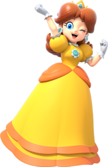
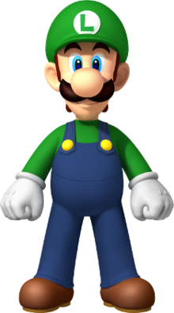

Peach
Princess Peach is a character in Nintendo's Mario franchise. Originally created by Shigeru Miyamoto, Peach is the princess of the fictional Mushroom Kingdom, which is constantly under attack by Bowser. She often plays the damsel in distress role within the series and is the lead female character, often being portrayed as Mario's love interest. In Super Princess Peach, Peach was the protagonist and player character.
More ...

Daisy
Princess Daisy is a fictional character in the Mario series of video games, in which she is the princess of the fictional region of Sarasaland. She first appeared in Super Mario Land as the game's damsel in distress, a role usually reserved for Princess Peach. Since her appearance in Mario Tennis, she has become a staple playable character in the Mario spin-off games, in which she is often paired up with Peach.
More ...

Luigi
Luigi is a fictional character featured in video games and related media released by Nintendo. Created by prominent game designer Shigeru Miyamoto, Luigi is portrayed as the slightly younger but taller fraternal twin brother of Nintendo's mascot Mario, and appears in many games throughout the Mario franchise, often as a sidekick to his older brother.
More ...

Mario
Mario is a fictional character in the Mario video game franchise, owned by Nintendo and created by Japanese video game designer Shigeru Miyamoto. Serving as the company's mascot and the eponymous protagonist of the series, Mario has appeared in over 200 video games since his creation.
More ...

Waluigi
Waluigi is a character in the Mario franchise. He plays the role of Luigi's arch-rival and accompanies Wario in spin-offs from the main Mario series, often for the sake of causing mischief and problems. He was created by Camelot employee Fumihide Aoki and is voiced by Charles Martinet, who described Waluigi as someone who has a lot of self-pity and would "cheat to win."
More ...